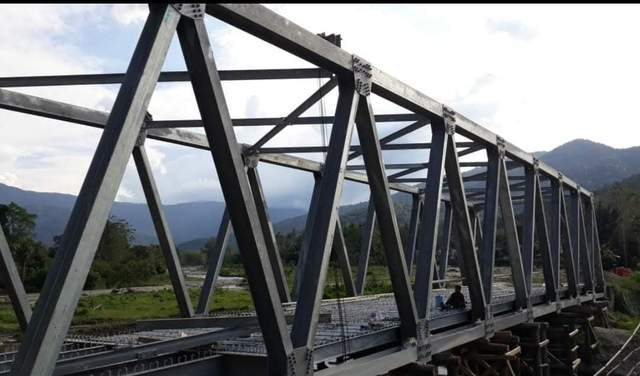
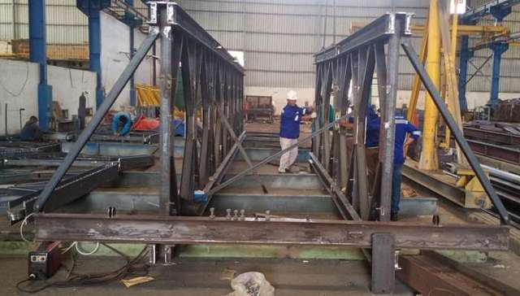
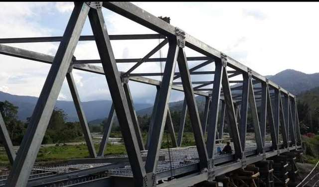
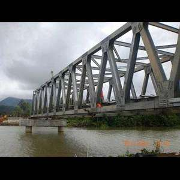

Produk & Solusi BESIPRO.ID
Jembatan Baja
Fabrikasi rangka jembatan baja — tipe bailey, komposit, maupun desain custom — untuk proyek infrastruktur jalan dan jembatan daerah, termasuk lokasi pegunungan dan sungai.
Sektor: Jembatan — bailey, komposit, custom · Infrastruktur daerah
KIRIM DRAWING / RFQ → atau chat WhatsApp
Yang perlu dikirim untuk penawaran
- Drawing jembatan atau bentang yang dibutuhkan
- Lokasi dan akses pengiriman
- Standar/spesifikasi teknis proyek
- Jadwal proyek
Alur kerja
Respons dalam 1×24 jam dengan estimasi awal — gratis konsultasi awal.
Kenapa BESIPRO.ID
Dokumentasi proyek



Pertanyaan umum
Apakah bisa mengirim ke lokasi terpencil?
Ya. BESIPRO.ID melayani pengiriman ke seluruh Indonesia — termasuk Papua, Kalimantan pedalaman, Sulawesi, dan kepulauan terluar.
Apakah melayani seluruh Indonesia?
Ya, BESIPRO.ID melayani pengiriman ke seluruh wilayah Indonesia — termasuk Papua, Kalimantan pedalaman, Sulawesi, dan kepulauan terluar.
Apakah bisa membantu engineering?
Ya, tim engineering kami dapat membantu review drawing, kalkulasi struktur, optimasi desain, dan penyesuaian spesifikasi material.
Bagaimana cara minta penawaran?
Kirim drawing, BOQ, atau deskripsi kebutuhan lewat formulir di halaman ini atau WhatsApp 0819 4133 990. Tim kami membalas dalam 1×24 jam.
Minta penawaran Jembatan Baja
Isi formulir singkat ini — tim BESIPRO.ID membalas dengan penawaran dalam 1×24 jam.